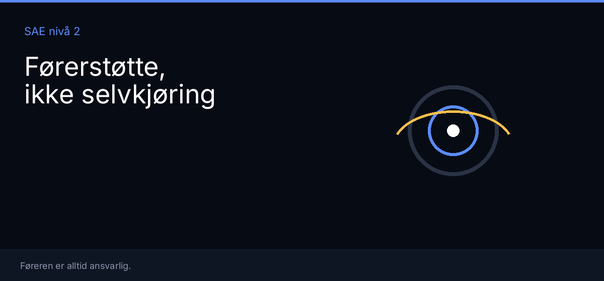
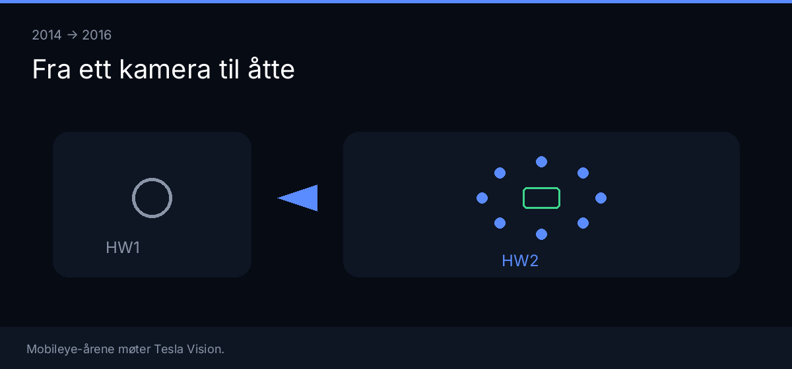
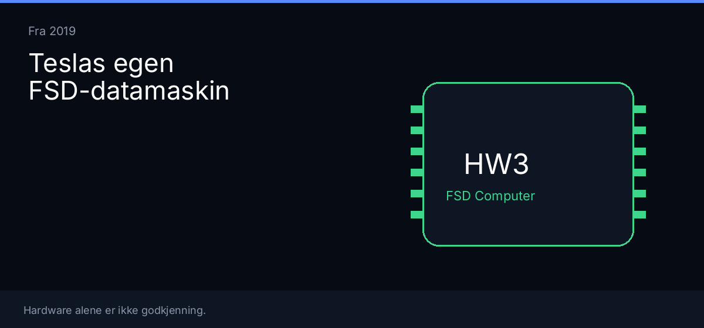
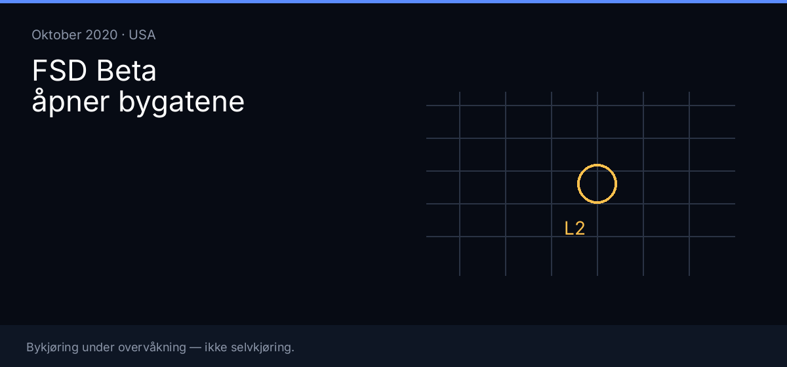
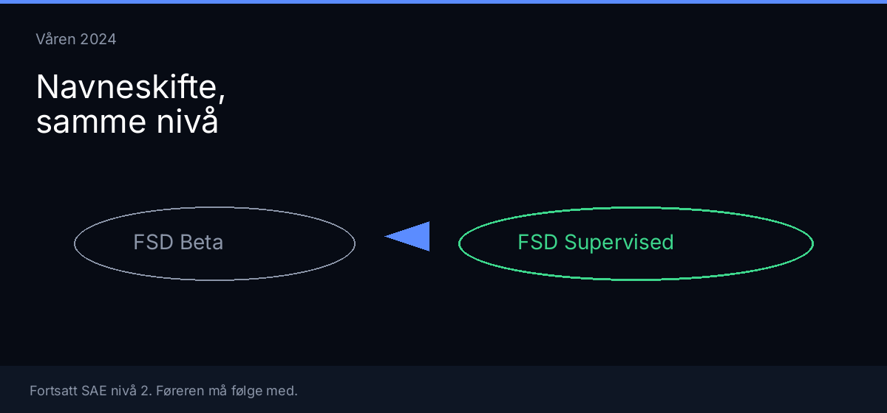
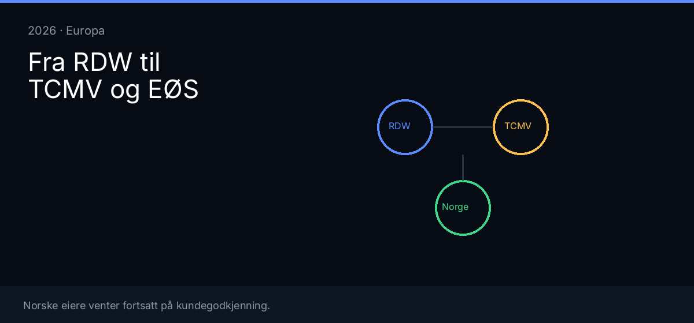

Autopilot og FSD — historien fram til nå
I oktober 2015 fikk mange Tesla-eiere for første gang Autopilot i hverdagen. Versjon 7.0 åpnet filholder og fartstilpasning på biler som allerede hadde Mobileye-kamera, radar og ultrasonikk. Det var førerstøtte, ikke selvkjøring.
Autopilot og Full Self-Driving (Supervised) er begge SAE nivå 2 — og separate pakker i Teslas sortiment. Denne teksten følger kronologien fra 2014 til i dag, med hardware der den hører hjemme, og med EU og Norge mot slutten.

Mobileye-årene
Høsten 2014 kom Model S med det som senere het Hardware 1: ett fremre kamera, radar, ultrasonikk og Mobileye EyeQ3. Autopilot som funksjon ble bred først med versjon 7.0 i oktober 2015. Versjon 7.1 strammet inn enkelte funksjoner etter kritikk av risikabel bruk.
Det var hjelp på motorvei. Bygatene lå fortsatt hos føreren.
Bruddet i 2016
I 2016 endte samarbeidet med Mobileye. Tesla bygde egen vision-stack. 19. oktober kunngjorde selskapet at nye biler fikk åtte kameraer og kraftigere datamaskin — Hardware 2.
Samme dag ble pakkene tydeligere: basis-Autopilot, Enhanced Autopilot (EAP) og Full Self-Driving som øvre valg. Det var ikke «Autopilot som ble til FSD». Det var tre produkter på samme bil.
De første månedene med HW2 manglet flere funksjoner HW1-eiere allerede hadde. Tesla samlet data før funksjonene ble skrudd på igjen.

Enhanced Autopilot tar form
Ved årsskiftet 2016–2017 kom første fase av EAP på ny hardware: cruise med trafikktilpasning og Autosteer, med beskjed om forsiktig utrulling.
Navigate on Autopilot — fra på-ramp til avkjøring — kom i USA i oktober 2018 for dem som hadde EAP eller FSD-pakken. Tidlige versjoner krevde blinklys-bekreftelse ved filskift.
EAP ble midtpakken: mer motorvei-hjelp enn basis-Autopilot, mindre enn den byorienterte FSD-pakken.
Tesla bygger egen datamaskin
Fra april 2019 kom Hardware 3 — «FSD Computer» med egen SoC. Den skulle tåle tyngre bykjøring. Oppgradering fra HW2/HW2.5 til HW3 har hatt ulike vilkår over tid; sjekk egen ordre hos Tesla.
Fra 2021 ble radar borte på mange nye biler. Fra 2022 forsvant ultrasonikk på mange. Mer av jobben ble lagt på kamera.

FSD Beta i USA
20. oktober 2020 startet begrenset FSD Beta i USA. Musk skrev at utrullingen skulle gå tregt. Et lite antall eiere fikk software som forsøkte by, kryss og rute — fortsatt Level 2, fortsatt med føreren som sikkerhetsnett.
Betaen vokste gjennom 2021–2022. I november 2022 ble den rapportert åpnet for alle nordamerikanske eiere med opsjonen. Amerikanske myndigheter og presse advarte samtidig om navnet: bilen var ikke autonom.
Europa fulgte andre regler — FN-regulativ 171 og artikkel 39. RDW har senere understreket at US- og EU-software ikke er én-til-én.

Hardware 4 og navnet Supervised
Fra januar 2023 kom Hardware 4 i refreshed Model S og Model Y. Kraftigere compute og nyere kameraer. FSD på HW4 kom gradvis; tidlige versjoner kjørte delvis som om de var HW3 før senere software tok i bruk native oppløsning (rapportert rundt v13-familien sent 2024).
Våren 2024 forsvant «Beta» i Teslas release notes. Systemet ble hetende FSD (Supervised). SAE-nivået endret seg ikke.

Europa: artikkel 39 og RDW
10. april 2026 ga nederlandske RDW typegodkjenning for FSD Supervised i Nederland, etter mer enn halvannet års testing. RDW skrev rett ut: ikke selvkjørende; føreren ansvarlig; EU-bred bruk krever avstemning blant medlemslandene i TCMV.
Litauen, Estland, Danmark og Belgia fulgte med nasjonale anerkjennelser i mai–juni. 5. mai presenterte RDW saken for TCMV. 30. juni ble det diskutert uten votum. 7. september 2026 ble Slovenia rapportert som sjette land.
Speed Offset — fartsmargin — dukket opp i den europeiske debatten. Svenske myndigheter har ifølge samtidige rapporter vært kritiske med mindre funksjonen endres. Det hører hjemme i EU-sporet.
Norge: fortsatt nei
Norge har ikke stemme i TCMV. Statens vegvesen deltar, spør og vurderer norske forhold. På infosiden (tydelig linje per 3. juli 2026) er svaret klart: ikke kundegodkjent. Begrenset testing med Tesla-trente sikkerhetsførere. Kundedemoer stanset til Tesla endrer materiell Vegvesenet mener er villedende.
SVV er kritisk til flere RDW-unntak, blant annet bruk utenfor motorvei og krav om fart og sideveis akselerasjon. Neste TCMV-møte er ifølge Vegvesenet i oktober. Avstemning kan komme da.
6. oktober som konkret dato er rykte inntil agendaen ligger i komitologiregisteret. Et EU-ja er ikke automatisk norsk aktivering samme dag.

Autopilot og annen allerede tillatt førerstøtte er en annen sak. Denne historien handler om FSD Supervised.
Det lange bildet
På tolv år har Tesla gått fra ett Mobileye-kamera til egne SoCer, fra motorvei-Autopilot til byorientert FSD Supervised, og fra amerikansk beta til europeisk artikkel 39-kamp. Pakkenavn og hardware har skiftet. For vanlige eiere er SAE-nivået det samme: føreren er ansvarlig.
I Norge er slutten foreløpig som på forsiden: ikke kundegodkjent. Det som endrer seg, er hvor langt EU-sporet har kommet — og hvor tydelig Vegvesenet setter vilkårene.
Se også norsk status, TCMV-estimat og Europa-feed.
Kilder
- RDW (10.04.2026) — type approval FSD Supervised
- Statens vegvesen — førerstøttesystemer / FSD
- EUR-Lex — forordning (EU) 2018/858
- Tesla — Full Self-Driving (Supervised)
- Electrek (19.10.2016) — HW2 / pakkekunngjøring
- Electrek (01.01.2017) — Enhanced Autopilot fase 1
- Electrek (27.10.2018) — Navigate on Autopilot
- Electrek (20.10.2020) — FSD Beta rollout
- Teslarati (31.03.2024) — FSD (Supervised) erstatter Beta
- Reuters (30.06.2026) — EU-vei for FSD
- Wikipedia — Tesla Autopilot / Autopilot hardware (sekundær)
- fsdnorge index / TCMV (EU-land 2026 — kryssjekk mot primær)